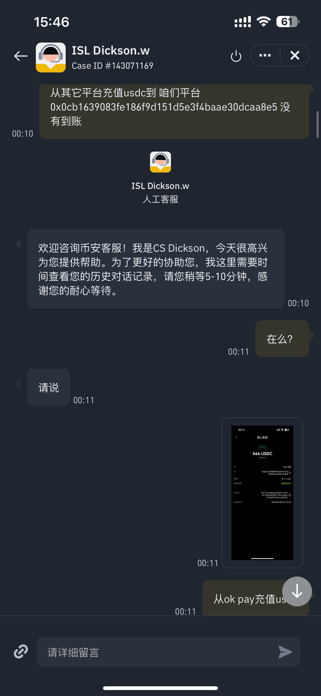
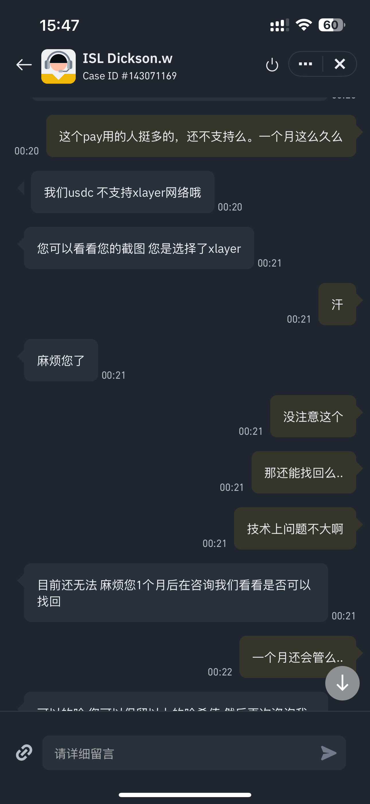
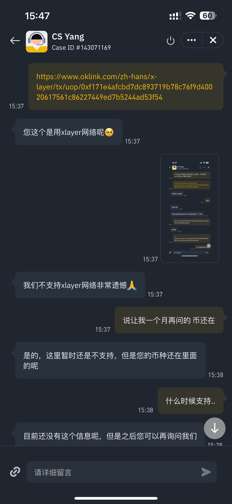

求助内容
Heyi 姐：
您好！前一段时间还在x上听了您的直播，领了您的红包，先说一声谢谢，经常在x上关注您，最开始CZ哥的事情，我也支持过您
发自内心的支持，正好前几天抖音上还刷到了您不寻常的成功经历，让我更加理解、佩服Heyi 姐。
一直听闻您在客服工作中专业又热心，是大家信赖的 "客服一姐"，此次遇到难题，特意恳请您的帮助。
4 月30日我尝试从 OKEX 转账 USDT 到币安时，因为我的原因选择错了x-layer，导致转账"损失"566u。给我的数字资产管理造成极大困扰，
也沟通过客服三次，还是没能解决问题。深知跨平台转账涉及多环节技术验证，可这些资产对我而言很重要，
真心盼Heyi姐能施以援手，若有需要配合提供更多资料（如转账单号、操作录屏、账户信息等 ）、相关处理费用，
我会第一时间补充。（相关的截图我放在vercel的链接里面：https://heyi-eight.vercel.app ）
麻烦您了！期待您的回复，也相信在您的专业支持下，问题能顺利解决，祝Heyi姐姐工作顺心～
Case ID #141045799
[币安UID 824000829]
[X ID guangfjyli https://x.com/guangfjyli ]
相关截图展示



部署说明
要将此网站部署到Vercel，您可以：
- 将项目推送到GitHub仓库
- 在Vercel平台上导入GitHub仓库
- 几分钟后，您的网站就上线了！